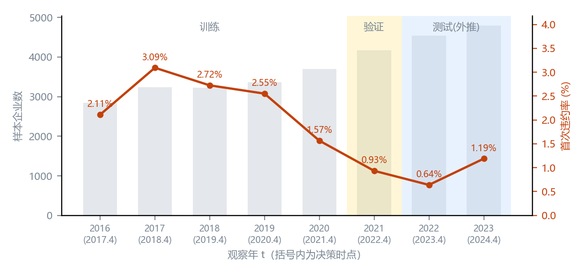
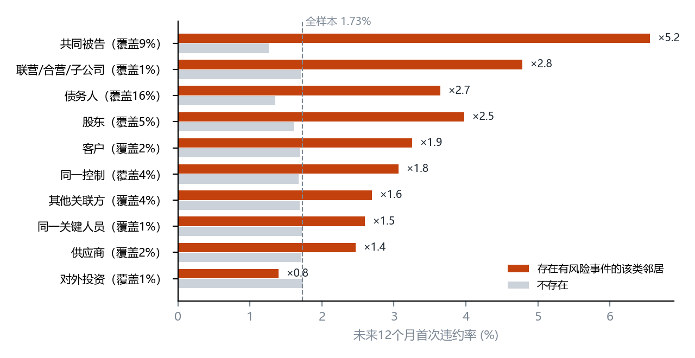
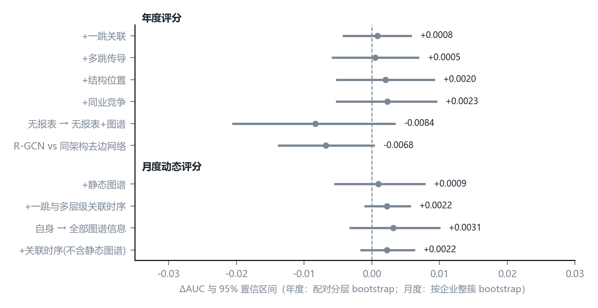
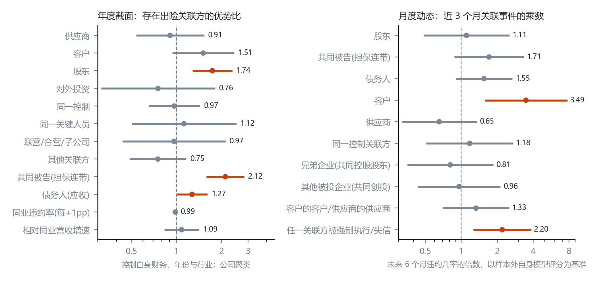
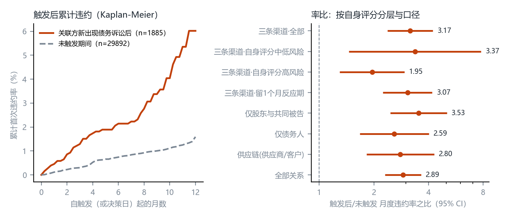
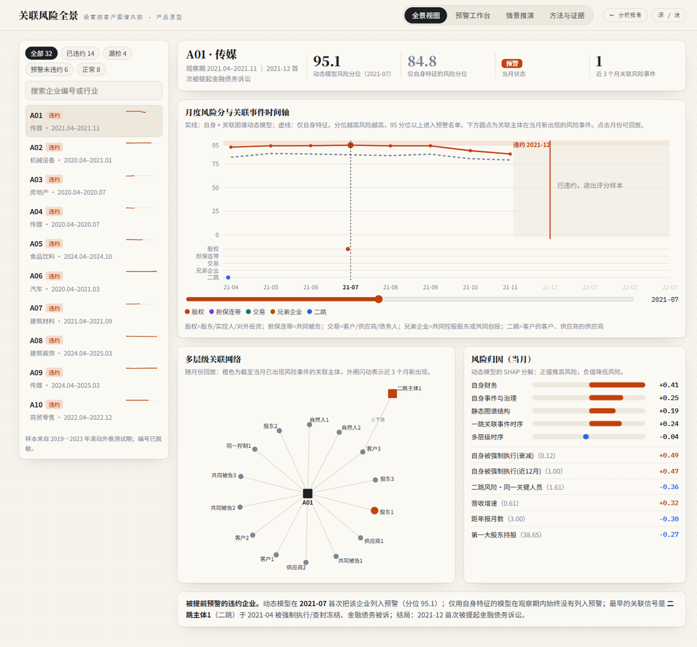

1数据介绍
1.1 代理样本与数据来源
经营类客户的授信与逾期记录只保存在银行内部，公开渠道拿不到违约标签。我们用 A 股非金融上市公司做代理样本：它们的上下游、股权、关联交易和诉讼执行都来自强制披露，每条记录带公告日，能还原授信决策当天可见的信息。表 1 列出数据来源。申万行业分类历史和交易所上市公司名录由我们从申万宏源研究官网和沪深北交易所下载；强制执行、查封冻结和失信事件从诉讼公告的执行情况字段解析得到（15,550 条带日期记录）。赛题提到的逾期信息原计划取自上海票据交易所的承兑人逾期名单，票交所自 2026 年 2 月起不再单独发布该名单、改为登录查询，本文未能纳入。
| 数据 | 来源 | 覆盖期 | 记录数 | 用途 |
|---|---|---|---|---|
| 前五大客户/供应商、集中度 | CSMAR 供应链研究数据库 | 2001—2025 | 59.3 万 | 供应商、客户边；供应商集中度 |
| 前十大股东 | CNRDS | 2014—2025 | 49.7 万 | 股东、对外投资、兄弟企业 |
| 关联交易 | CNRDS | 2000—2026 | 49.3 万 | 同一控制、关键人员、联营合营等边 |
| 诉讼仲裁（含执行情况） | CNRDS | 2014—2025 | 12.6 万 | 违约标签；被诉、强制执行、失信事件 |
| 违规处罚 | CNRDS | 2014—2025 | 2.5 万 | 风险事件 |
| 偿债与盈利能力（季度） | CNRDS | 2014—2025 | 各 19.6 万 | 自身财务、最新季报 |
| 机构持股、重要股权交易 | CNRDS | 2014—2025 | 4.9/24.4 万 | 治理与减持 |
| 申万行业分类历史（自行下载） | 申万宏源研究官网 | 1990—2026 | 1.3 万 | 行业、同业竞争 |
| 上市公司名录与退市名单（自行下载） | 沪深北交易所 | 截至 2026-09 | 5,932 家 | 全称对齐、上市日期 |
注：CNRDS 为中国研究数据服务平台，CSMAR 为国泰安数据库。
1.2 违约标签与评分时点
年度口径的决策时点 D_t 取 t+1 年 4 月 30 日（t 年年报披露截止日），特征只用该日以前公开的信息，标签窗口为其后 12 个月。违约定义为企业本身或其子公司、孙公司、分公司以被告身份被提起金融债务诉讼（金融借款、借款、票据追索、融资租赁、保证与担保追偿、债券交易），原告主要是银行、保理和融资租赁公司，含义接近贷款逾期后的司法催收。前 24 个月内已被提起过此类诉讼的企业不进入当年样本，模型预测首次违约。剔除银行与非银金融后，样本为 2016—2023 年 29,892 个企业-年、517 次违约（1.73%）。月度口径用同一批企业，每月月末重新评分，预测未来 6 个月首次违约（35.6 万个企业-月，3,024 个正例）。评估一律采用 2019—2023 年逐年滚动外推：每一年用此前年份训练、前一年验证、当年测试。
1.3 关联图谱与风险事件
图谱按观察年构建。上市公司用股票代码标识，非上市企业、自然人和机构用规范化全称标识；全称字典合并交易所名录、供应链中标注为上市公司的对手方和违规处罚对象，共 6,837 个全称对应 5,896 个代码。名称只做全角半角、括号和空白的等价变换，不做子串匹配。表 2 给出关系规则，每年的图有 4.0 万至 6.8 万个节点、4.7 万至 8.0 万条边。
| 关系 | 构造规则 | 边数(2023) | 样本覆盖率 |
|---|---|---|---|
| 供应商 / 客户 | 年报前五大，剔除“客户一”“A 公司”“**”等匿名名称；权重为采购或销售占比 | 11,304×2 | 22.1% |
| 股东 / 对外投资 | 前十大股东，剔除基金、券商、保险、QFII、主权基金、创投与名义持有人；自然人仅留持股≥5% | 16,934×2 | 99.2% |
| 同一控制 | 36 个月内关联交易公告中的同一实际控制人、控股股东、母公司、同一集团 | 31,920 | 45.9% |
| 同一关键人员 | 关联交易公告中的同一董监高或关键管理人员 | 4,616 | 33.4% |
| 联营/合营/子公司 | 关联交易公告中的联营、合营、参股与子公司 | 7,374 | 26.1% |
| 其他关联方 | 关联交易公告中其余关联方 | 32,602 | 59.9% |
| 共同被告 | 企业自身被诉案件中的其他被告（担保人、被担保人、连带责任方） | 13,098 | 19.6% |
| 债务人 | 企业作为原告起诉的金融债务或经营性欠款对象 | 6,770 | 16.4% |
注：“×2”表示该类关系与其反向关系（客户、对外投资）各计一次；覆盖率为存在该类邻居的企业-年占比。
每个节点带有带日期的风险事件：作为被告卷入金融债务诉讼、经营性欠款诉讼（货款、工程款、买卖合同等）、被强制执行或查封冻结、失信与限制高消费、违规处罚。年度口径按 12 个月半衰期加权，月度口径按 3 个月半衰期加权并保留近 1、3、12 个月计数。度数超过 50 的非上市实体（大型央企客户、地方国资平台等）只参与一跳计算。
2描述性分析
违约率在 2017 年最高（3.09%），2022 年最低（0.64%），2023 年回升到 1.19%（图 1），与 2018—2020 年民营企业债务集中暴露、2021 年后房地产链条风险释放的时间线吻合。房地产违约率 4.60%，建筑装饰 3.02%，商贸零售 2.88%。违约企业资产负债率中位数 0.60，正常企业 0.39。

图 2 比较有、无出险关联方时的违约率。共同被告出险时违约率为 6.56%，是无此类邻居企业的 5.2 倍；联营合营子公司 2.8 倍，债务人 2.7 倍，股东 2.5 倍，客户 1.9 倍，供应商 1.4 倍。风险企业本来就聚集在少数行业和集团里，这些原始差异要在第 3.3 节做条件检验。

3模型分析
3.1 两种评分口径与特征
年度口径每年评分一次，特征分五组：自身（财务比率及其变动、诉讼违规、减持、机构持股、股权结构、行业，54 个）、一跳关联（10 类关系各自的邻居数、金融违约暴露、欠款暴露、风险邻居数、财务困境邻居数，56 个）、多跳传导（13 个）、结构位置（度数、PageRank、k-core、控制圈暴露，8 个）和同业竞争（申万二级同业的违约率、亏损率与相对表现，9 个）。多跳传播在对称归一化邻接矩阵 Â 上进行，企业 i 经第一跳关系 r 收到的二跳风险为
h2_r(i) = Σ_j W_r(i,j) · [ Σ_k Â(j,k)·s_k − Â(j,i)·s_i ]
减去的一项去掉 i→j→i 的回声。月度口径每月月末评分，在年度特征之外加入最新季报的负债结构、自身事件的近期计数，以及关联事件时序：10 类一跳关系各自的近 1、3、12 个月事件数与衰减值，外加兄弟企业（共同控股股东或同一控制）、共同创投的其他被投企业、客户的客户与供应商的供应商三类多层级关系的事件时序，共 223 个特征。企业自己作为当事人的案件不计入关联事件。模型用 LightGBM，验证集只取前一年的前 6 个月，保证标签窗口不越过测试期起点。
3.2 区分度：图谱能否提高排序准确性
| 口径 | 模型 | AUC | 增量 [95% CI] |
|---|---|---|---|
| 年度 | M1 自身特征 | 0.877 | — |
| 年度 | M2 +一跳关联 | 0.877 | +0.0008 [-0.0043, +0.0059] |
| 年度 | M3 +多跳传导 | 0.877 | +0.0005 [-0.0059, +0.0070] |
| 年度 | M4 +结构位置 | 0.879 | +0.0020 [-0.0053, +0.0093] |
| 年度 | M5 +同业竞争 | 0.879 | +0.0023 [-0.0054, +0.0096] |
| 年度 | R-GCN（基线：同构去边网络） | 0.868 | -0.0068 [-0.0139, +0.0004] |
| 月度 | D1 自身（含自身事件时序、最新季报） | 0.876 | — |
| 月度 | D2 +静态图谱 | 0.877 | +0.0009 [-0.0056, +0.0079] |
| 月度 | D3 +一跳关联事件时序 | 0.874 | -0.0028 [-0.0070, +0.0009] |
| 月度 | D4 +多层级时序（全部图谱信息） | 0.879 | +0.0031 [-0.0034, +0.0101] |
| 月度 | D1T 自身+关联时序（不含静态图谱） | 0.879 | +0.0022 [-0.0017, +0.0064] |
注：年度增量以 M1 为基线（R-GCN 以同构去边网络为基线），配对分层 bootstrap；月度 D2、D4、D1T 以 D1 为基线，D3 以 D2 为基线，按企业整簇 bootstrap。
年度口径下，自身特征模型的 AUC 为 0.877，加入一跳关联、多跳、结构和同业特征后的增量在 +0.0005 至 +0.0023 之间，置信区间都包含 0；单次切分曾给出显著的 +0.0066，换成逐年外推后消失。去掉财务报表再加入图谱，AUC 反而下降 0.0084。关系图卷积网络的测试 AUC 高于 LightGBM，但相对去掉所有边的同构网络增量为 -0.0068（-0.0139—+0.0004），提升来自神经网络这一模型类别。月度口径下，自身模型 AUC 为 0.876，加入全部图谱信息后为 0.879，增量 +0.0031（-0.0034—+0.0101）。增量在 2022、2023 年为 +0.005 和 +0.010，早年份为负，与近年诉讼数据更完整、房地产链条风险集中暴露一致，五年合并后不显著。自身没有任何被诉与违规记录的“干净”企业最接近信息稀薄的经营类客户，这一子样本上的增量略大（年度 +0.0037，月度 +0.0046），区间仍包含 0。

3.3 风险从哪里来：传导渠道与事件乘数
图 4 左栏把每类关系上是否存在出险关联方作为解释变量，控制 11 个自身财务与诉讼变量及年份、行业固定效应（Logit，公司聚类标准误）。股东出险的优势比为 1.74（1.28—2.36），共同被告（担保连带）出险为 2.12（1.59—2.84）；改用行业×年份固定效应的线性概率模型吸收共同冲击后，两者使违约概率分别提高 1.59 个百分点（0.67—2.50） 和 2.21 个百分点（1.07—3.35），约为基准违约率的 92% 和 128%。债务人渠道在 Logit 中为 1.27（1.00—1.61），在行业×年份固定效应下降到 0.03 个百分点（-0.53—0.59），它的原始关联主要来自行业共同冲击。供应商、同一控制、同一关键人员和对外投资渠道的区间都包含 1。
右栏换成月度样本外口径，以自身模型的违约几率为基准：近 3 个月客户新被起诉使未来 6 个月违约几率升至 3.49 倍（1.57—7.72），关联方被强制执行或失信升至 2.20 倍（1.26—3.84）；股东与共同被告的动态乘数为 1.11 和 1.71，区间包含 1。股权与担保链决定企业长期暴露在哪些风险下，客户出事和关联方被执行则是最及时的信号。

3.4 赛题三条机制的检验
赛题业务背景列举了三条传导机制，我们逐条构造代理变量，在年度截面上用线性概率模型检验（表 4，控制与 3.3 节相同的自身变量和行业×年份固定效应）。上游供应商提价：毛利率挤压本身和它与高供应商集中度的交互都不显著，供应商高度集中本身使违约概率高 0.64 个百分点。投资方在其他被投项目出险：兄弟企业出险和共同创投的其他被投企业出险都不显著，月度乘数也只有 0.81 和 0.96。竞争对手突破：同业中高速增长者占比每高 1 个标准差，违约概率高 0.34 个百分点，但这一效应并不集中在增速落后的企业，更像行业过热，而非竞争挤压。
| 赛题机制 | 代理变量 | 违约概率变化(百分点) | 95% CI |
|---|---|---|---|
| ① 上游供应商提价 | 毛利率挤压（每 1 个标准差） | +0.11 | [-0.19, +0.40] |
| 前五大供应商集中度高于中位数 | +0.64 | [+0.32, +0.95] | |
| 挤压 × 集中度高 | -0.09 | [-0.49, +0.31] | |
| ② 投资方其他项目出险 | 兄弟企业出险（共同控股股东/同一控制） | -0.47 | [-1.19, +0.24] |
| 共同创投/产业基金的其他被投企业出险 | -0.08 | [-0.46, +0.31] | |
| ③ 竞争对手突破 | 同业营收增速>30% 的企业占比（每 1 个标准差） | +0.34 | [+0.08, +0.61] |
| 高速增长者占比 × 本企业增速落后 | -0.34 | [-0.65, -0.04] |
注：线性概率模型，行业×年份固定效应，企业聚类标准误；基准违约率 1.73%。
4应用验证
4.1 贷中关联事件预警
年度评分只在年报披露后更新一次，关联方风险却随时出现。我们模拟贷中监控：从决策时点起跟踪每家企业的股东、共同被告和债务人，一旦有关联方新被提起金融债务或欠款诉讼即视为触发（企业自身为当事人的案件不计入），比较触发后与未触发期间的月度首次违约率。触发后为 4.29‰，未触发为 1.35‰，率比 3.17（2.37—4.23）；按行业×年份分层的 Mantel-Haenszel 率比为 3.03（2.20—4.01），按样本外自身评分分层后，中低风险段为 3.37（1.46—7.79），高风险段为 1.95（1.30—2.95）。从触发到违约的中位时间为 3.9 个月（四分位 1.8—8.0），给银行留出 1 个月反应期后率比仍为 3.07（图 5）。月度动态模型每月把评分前 5% 的企业列入预警名单，名单 6 个月内违约率为 5.6%，是全样本 0.60% 的 9.4 倍，覆盖 54.4% 的违约事件（仅自身模型为 51.6%），首次预警中位提前 5.1 个月。

4.2 案例：一条二跳传导路径
案例企业是一家建筑装饰企业，决策时点仅用自身特征的年度风险分位为 72.5%，加入关联特征后升至 86.4%。它的前五大客户之一是一家中间企业，这家企业又是一家已违约房地产上市公司的前五大供应商。之后案例企业被提起借款合同纠纷诉讼。这条“房企违约 → 总包 → 分包”的路径不出现在案例企业自身的任何报表科目里。下图可切换三个案例；更完整的逐月回放见产品原型。
4.3 局限
第一，代理样本是规模大、信息透明的上市公司，自身财务的解释力远高于经营类客户。第二，违约标签是被提起诉讼，不等于逾期，诉讼披露有重要性门槛，小额违约可能漏记。第三，前五大客户和供应商中约 70% 的名称被匿名化，票据逾期数据也未能纳入，关联网络和风险事件都不完整。第四，股权和关联交易边来自年度快照，缺少精确生效日期。
5产品思路
证据给出了清楚的分工：自身信息负责给客户排序，图谱负责说明风险来源，并在关联方出事时及时报警。我们据此做了可交互的产品原型“关联风险全景”（网页版可直接操作），包含四个模块。全景视图以客户为中心展示股权、担保、交易和二跳关联网络，按月回放风险在网络中的出现，并给出月度风险分曲线与 SHAP 归因（图 7）；预警工作台每月列出评分前 5% 的客户及触发来源，可按关系类型、行业和年份筛选；情景推演在客户当前违约概率上叠加假设的关联事件，按样本外事件乘数给出调整后的概率和建议动作；方法与证据页汇总本报告的检验。

业务上分三层落地。第一层是年度评分卡，用自身财务、诉讼与治理变量做准入、定价和额度。第二层是关联事件预警：为每个存量客户维护持股 5% 以上的股东与实际控制人、担保与连带责任方、前五大客户与主要应收对手方三类清单，每日拉取新增诉讼、被执行、失信和票据逾期事件，命中后冻结未用额度并在 30 天内复核；按本文估计，触发客户中位提前 3.9 个月违约，足够完成复核、追加担保或压降额度。第三层是控制圈合并管控，把持股 20% 以上的控股关系与同一控制关系连成的控制圈合并计算敞口，防范集团内多头融资和互保。迁移到行内经营类客户时图谱结构不变，只需替换数据源（表 5）；经营类客户缺少可信报表，只依赖外部公开事件的第二层受影响最小。
| 本文使用的上市公司数据 | 经营类客户可用的替代数据 |
|---|---|
| 前五大客户与供应商 | 增值税发票、结算流水、供应链金融平台的交易对手 |
| 前十大股东 | 工商登记股东、实际控制人、受益所有人 |
| 关联交易公告 | 工商任职与对外投资（同一法定代表人、董监高交叉任职） |
| 诉讼公告与执行情况 | 裁判文书、执行信息公开网（失信、限高、被执行）、票交所承兑人逾期信息（机构接口） |
| 违约标签：首次被提起金融债务诉讼 | 行内 90 天以上逾期 |
6总结结论
第一，风险沿股权和担保链传导：控制自身财务后，股东出险与担保连带方出险的违约优势比为 1.74 和 2.12，吸收行业×年份共同冲击后仍然显著；债务人的静态暴露不稳健。赛题列举的供应商提价、投资方其他项目出险和竞争对手突破三条机制中，只有供应商集中度和同业过热两个代理变量显著。
第二，传导以月计，而且集中在少数事件上。关联方新出现债务诉讼后企业月度违约率升至 3.17 倍，中位 3.9 个月后违约；客户新被起诉和关联方被执行在自身评分之上分别使违约几率升至 3.49 倍和 2.20 倍。
第三，这些信号覆盖的客户少，改变不了整体排序：年度与月度评分中，静态图谱特征、事件时序和关系图卷积网络都没有稳定提高 AUC。图谱在风控产品中最适合放在贷中预警、风险归因和敞口管理环节。
下一步有两项工作：用生存模型直接估计关联事件对违约风险的动态影响；接入工商、执行与票据数据，在行内经营类客户上重估各渠道的强度。本文的局限集中在代理样本、标签口径和关系完整性三方面，见 4.3 节。
附录稳健性与复现
| 检验 | 结果 |
|---|---|
| 传导渠道：行业×年份固定效应线性概率模型 | 股东 +1.59 个百分点（0.67—2.50）；共同被告 +2.21 个百分点（1.07—3.35）；债务人 +0.03 个百分点（-0.53—0.59） |
| 贷中预警：行业×年份分层 Mantel-Haenszel 率比 | 3.03（2.20—4.01） |
| 贷中预警：触发源拆分 | 股东与共同被告 3.53（2.47—5.04）；债务人 2.59（1.67—4.01） |
| 单次切分（测试 2022—2023）：M2 相对 M1 | ΔAUC +0.0066 [+0.0002, +0.0128]；滚动外推下为 +0.0008 |
| “干净”企业子样本（无自身被诉与违规记录） | 年度 M4 +0.0037 [-0.0153, +0.0219]；月度 D4 +0.0046 [-0.0078, +0.0197] |
| 替代标签：金额 ≥1000 万元 | M1 0.934 → M5 0.934（测试正例 71） |
| 替代标签：含经营性欠款诉讼 | M1 0.908 → M5 0.918（测试正例 404） |
| 逻辑回归对照（单次切分） | M1 0.940 → M5 0.924 |
| 图谱风险分叠加到对数几率（滚动外推） | ΔAUC -0.0084 [-0.0165, -0.0011] |
复现：代码按 00—22 的编号顺序运行（数据转换、下载补充数据、清洗、年度建图与特征、消融、情景分析、滚动外推、图谱风险分、R-GCN、描述统计、作图、案例、报告、补充分析、贷中监控、R-GCN 滚动外推、共同冲击检验、事件扩充、月度动态面板、动态模型、机制检验、“干净”企业子样本、产品原型），12 号脚本最后再运行一次以写入全部结果。原始数据来自 CNRDS 与 CSMAR，受数据库许可限制未随代码公开。
数据来源声明：本研究数据来源于中国研究数据服务平台（CNRDS）的诉讼仲裁、违规处罚、主要股东持股、关联交易、内部人交易、重要股权交易、机构持股、偿债能力与盈利能力数据库，以及国泰安（CSMAR）供应链研究数据库；行业分类来自申万宏源研究，上市公司名录来自上海、深圳、北京证券交易所。